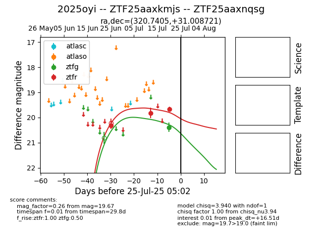

Target 2025oyi at 2025-07-25 05:02, see:
FINK: fink-portal.org/2025oyi
Lasair: lasair-ztf.lsst.ac.uk/objects/2025oyi
ALeRCE: alerce.online/object/2025oyi
TNS: wis-tns.org/object/2025oyi
YSE: ziggy.ucolick.org/yse/transient_detail/2025oyi
alt names
ZTF25aaxnqsg (ztf)
ZTF25aaxkmjs (fink)
2025oyi (tns,yse)
coordinates:
equatorial (ra, dec) = (320.7405,+31.00872)
galactic (l, b) = (78.8476,-13.50135)
photometry
last ztfg=20.39, ztfr=19.67
1 ztfg, 3 ztfr detections
